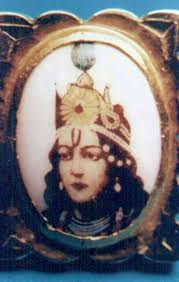

what happen to Krishna after Mahabharata
Mausala Purva
.jpg)
In days after the 18-day Kurukshetra war, Lord Krishna meets Gandhari, a meeting described in Stri Parva. In anger and grief over the death of her sons and the Kaurava soldiers, Gandhari curses Krishna with the destruction Yadavas in a manner similar to the death of her sons. She blames Krishna for his inaction and believes that he could have prevented the war and the slaughter of hundreds of millions people who died in the war. Krishna accepts the curse because he taught the Yadavs that day were being very adharmi, explains how he had tried many times to mediate peace, how Duryodhana refused. He also explained how Duryodhana and the Kauravas had tried many times to kill the Pandavas.
This is the Parva which describes the destruction of the Yadavas through a (Musala) fight. The Parva begins with the appearance of many bad omens at the beginning of the 36th year after the Mahabharata war. It describes how the young Yadava heroes try to insult the great Rishis - Vishwamitra, Kanva, and Narada - and get cursed in return that an iron club born of Samba who was disguised as a pregnant woman would be the cause of the destruction of the Yadavas - the entire clans of Vrishnis, Andhakas, Bhojas and Kukuras. Coming to know of the curse and the birth of an iron club to Samba, the Yadava king orders that club to be grounded into a paste and cast into the sea. Evil portents are seen in Dwaraka too, and Krishna, realizing that the time has come for him to depart from this world, orders the Yadavas to go for pilgrimage at Prabhasa, near the sea. The Yadava heroes, along with their women, have a great party on the sea shore. Having completely drunk, an argument breaks out between Satyaki and Kritavarma over each other's wrong doings during the great war, and Satyaki strikes down Kritavarma with a sword. The Eraka grasses that had grown on the sea shore - that also had the elements of that iron club born to Samba - become massive iron clubs. The Yadavas use them to kill each other.
Balarama leaves his body in the form of a great snake which is beind lord krishna and enters the sea. Krishna struck's with an arrow of a hunter, while he was sleeping in a forest, and ascends to heaven. Krishna's charioteer travels to Hastinapura and informs of the events to the pandavs. The grieving Arjuna comes to Dwarika, performs the last rites for the slain Yadavas including balrama and Krishna, takes the widowed Yadava women and young children to Indraprastha. On the way, the dacoit tribe of Abhiras fights Arjuna's camp, and takes away many Yadava women and the jewels. Arjuna's great bow Gandiva does not work, he forgets the spells for his weapons, his quiver is exhausted, and his valour has diminished. He reinstates Vajra. Krishna's grandson as the king in Indraprastha, and on his way to Hastinapur.
real photo of SHRI KRISHNA BHAGWAAN:-

SHRI KRISHNA AT HIS SMALL AGE